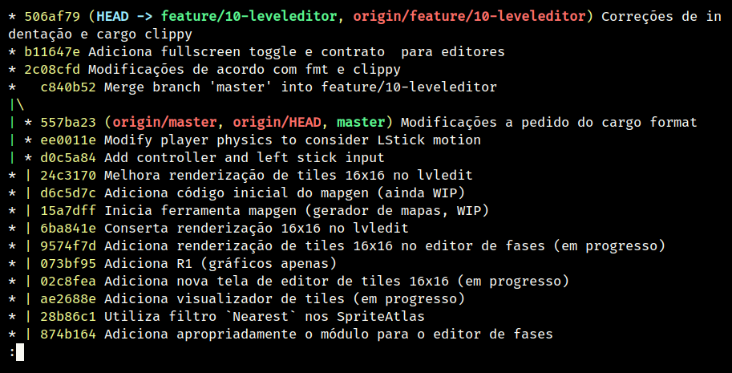
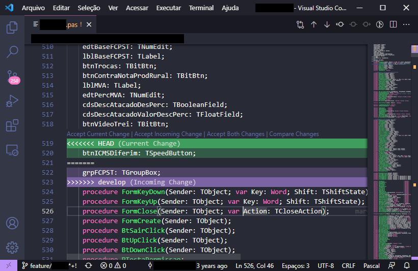
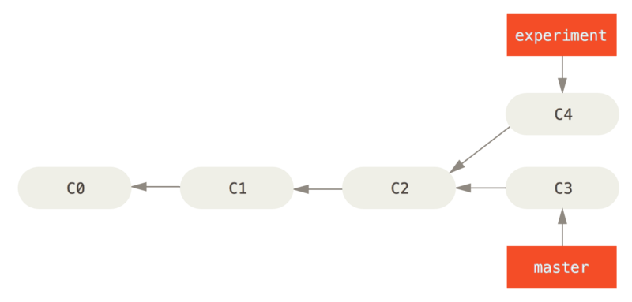
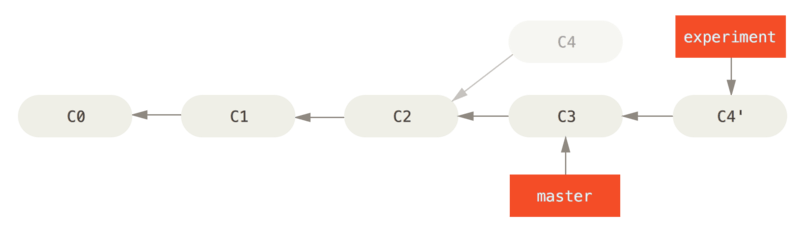
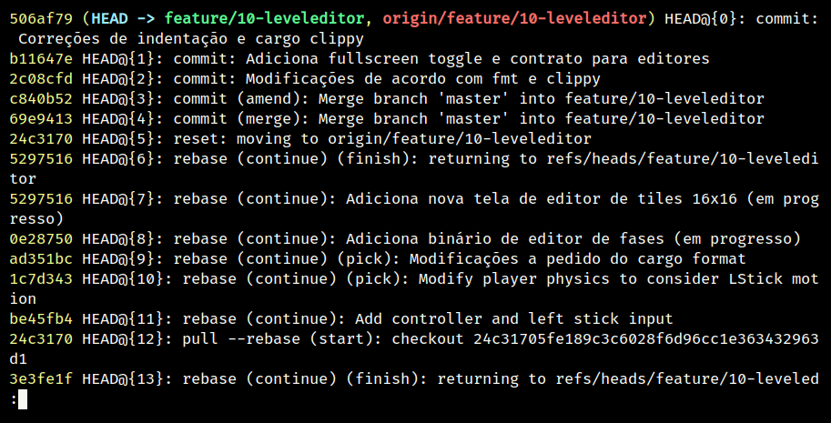

Git
Webinar Técnico
Lucas S. Vieira
lucas.vieira@atsinformatica.com.br
28 de março de 2022
ATS Informática
O que é Git?

Surgimento do Git
Gerenciador de controle de versão (SCM) criado por Linus Torvalds.
Feito para o Linux, portanto pensado para bases de código grandes!
Ao contrário de outros SCMs (como SVN), Git não armazena deltas (mudanças), e sim snapshots ("fotos" inteiras do projeto).

Características principais
- Git trabalha com repositórios.
- Existem repositórios remotos e repositórios locais.
- Cada repositório possui um ou mais ramos (branches), e cada ramo tem uma
ponta (
HEAD). - Cada branch é composto de vários commits.
- Pode-se criar branches a partir de outros.
- Pode-se criar forks de repositórios.
Para quem gostar da "teoria"…
A estrutura de dados do Git é um grafo acíclico dirigido (DAG).
Ou seja, é um grafo, mas os caminhos têm uma direção temporal. Por isso, pode ser imaginado como uma árvore.
Git vs. GitHub

Git = Controle de versão.
GitHub = Git forge e rede social.
Qual a importância de uma Git Forge?
- Portfolio;
- Compartilhamento de código aberto;
- Hospedagem de sites estáticos (GitHub Pages);
- Integração com outros serviços (ex. Heroku);
- Comunidade!
Uso de linha de comando
$ git status
$ git --help
Fluxo de Git
Criando um repositório
- Via
git clone(clonar remoto) - Via
git init(manualmente) - Forks de repositórios
Gerenciando commits
Adicionando arquivos para a área de staging
$ git add arquivo.txt
$ git add .
$ git add -A
Commits
$ git commit
$ git commit -m 'Mensagem do commit'
Log de commits
$ git log
$ git log --oneline
$ git log --graph
$ git log --graph --oneline

Desfazendo commits
Para desfazer seu último commit na branch atual:
$ git reset --soft HEAD~1
- O número indica a quantidade de commits desfeitos.
- Se estiver no Git CMD, troque
~por^. - Caso você queira reverter e REMOVER as alterações, use a flag
--hard.
ATENÇÃO!
RESET não é REVERT. Existe uma diferença entre desfazer commits e revertê-los.
Resetar implica refazer a história. Reverter implica criar uma nova alteração no futuro que desfaça uma do passado.
Definindo o repositório remoto
Adicionar um repositório remoto chamado origin para o repositório
atual.
$ git remote add \
origin https://github.com/fulano/repo.git
Enviando commits para o repositório remoto
$ git push
Pode ser que o upstream da branch não esteja definido.
Podemos criar a branch no repositório remoto (origin).
$ git push --set-upstream origin minha_branch
$ git push -u origin minha_branch
Criando branches
Estilo Git Flow
- Branches padrão:
master,develop - Novas implementações:
feature/xxxx(peladevelop) - Correções de emergência (e SLAs):
hotfix/xxxx(pelamaster)
$ git checkout develop
$ git checkout -b feature/xxxx
Gerenciando branches
Deletar uma branch (local)
$ git checkout outra_branch
$ git branch -d branch_original
$ git branch -D branch_original
Deletar uma branch (remota)
Na verdade, fazemos um "push da remoção".
origin é o nome do repositório remoto.
$ git push origin --delete branch_original
$ git push origin :branch_original
Remover e recuperar referências de branches remotas
git fetch --prune
Práticas comuns
Ignorando arquivos
Alguns arquivos não deveriam subir para o Git (salvo algumas exceções). Em geral: arquivos binários (blobs).
Isso pode ser feito com um arquivo .gitignore.
O arquivo pode ser colocado na raiz do repositório ou em uma subpasta.
*.pdf
*.jpg
*.png
*.exe
*~
*.dcu
Exemplos para projetos de cada linguagem: https://gitignore.io
Se for extremamente necessário armazenar arquivos binários grandes, use a extensão Git LFS (Large File Support).
$ git lfs track "*.mp3"
$ git lfs track "*.bin"
$ git lfs track "*.res"
Atualizar uma branch
Pode ser necessário atualizar o branch atual de acordo com a
develop.
Há duas formas de fazer isto:
- Merge;
- Rebase.
Antes de mais nada, atualize a develop.
$ git checkout develop
$ git pull
$ git checkout feature/xxxx
Merge
O Git Merge atualmente é o processo padrão para recuperar novos commits de uma branch pública.
Basta atualizar a develop e dar merge na feature:
$ git merge develop
"Merge develop into feature/xxx"
Conflitos no Merge
Durante o processo de merge, pode ocorrer conflitos.
Se ocorreu um conflito durante um pull request, é boa prática realizar o merge na máquina local para garantir que a aplicação esteja compilando.
Em caso de conflitos, tenha sempre um comparador de código configurado para melhor visualização.
Editores como Visual Studio Code, Emacs e Vim podem ajudar neste processo.

Rebase
O rebase opera sob o seguinte fluxo:
- "Rebobina" sua branch atual até o ponto em comum com a
develop; - Recupera todos os novos commits que estão na
develop; - Reaplica os commits da sua branch novamente, um a um.
O rebase efetivamente modifica o histórico da branch, por isso é necessário ter acesso de mudança na branch.
$ git rebase develop
"Rebase feature/xxxx onto develop"


Regra de ouro do Rebase
Nunca, NUNCA faça rebase em uma branch PÚBLICA.
Ex: Completar PR de feature/xxxx para develop com rebase.
Motivo: Vai zuar a develop PRA TODO MUNDO.
Desvantagens do rebase
- Basicamente refaz o histórico da branch.
- Dependendo do uso, um rebase pode gerar mais de um conflito.
- O rebase na verdade é um "Comando Bombril".
Qual escolher?
O histórico do Git em si é um documento. Ele pode significar:
- O percurso de COMO e QUANDO foram feitos os commits;
- Uma linha lógica de desenvolvimento de cada task.
Para o primeiro caso, atualize sua branch com merges. Para o segundo, use rebases.
Produtividade com Git
Commits em branches erradas
Caso 1
"Estou na develop, fiz commit e não criei minha branch!"
- Crie a branch a partir da
develop; - Volte para a
develop; - Desfaça o commit (apagando);
- Vá para a branch nova e o commit estará lá.
Começando da develop:
$ git checkout -b feature/xxxx
$ git checkout develop
$ git reset --hard HEAD~1
$ git checkout feature/xxxx
Para mais de um commit, ajuste o git reset.
Caso 2
"Estou na master, fiz commit, mas deveria ter criado uma branch a partir da develop!"
Para começar: Nada de pânico.
- Abra o log;
- Anote o hash do commit (pode ser o pequeno);
- Crie a branch normalmente;
- Faça cherry-pick do commit para a sua branch;
- Desfaça o commit na
master.
$ git log --oneline
$ git checkout develop
$ git checkout -b feature/xxxx
$ git cherry-pick f5a0f14
$ git checkout master
$ git reset --hard HEAD~1
- Pode dar conflito.
- Para mais commits, ajuste a quantidade de cherry-picks (faça-os em
ordem!) e ajuste o
git reset.
Investigando commits
"Uma funcionalidade funcionava na data X, mas não funciona mais. Preciso descobrir qual commit quebrou a funcionalidade"
Git Bisect
É possível realizar pesquisa binária via Git através de Bisect. Para iniciar uma sessão de Bisect:
- Encontre o hash do commit em que a funcionalidade estava OK;
- Inicie o processo;
- Marque o commit atual como "ruim" (quebrado);
- Marque o commit antigo como "bom", através do hash.
$ git bisect start
$ git bisect bad
$ git bisect good f5a0f14
Caso o repositório use tags, as versões da aplicação podem ser melhor localizadas através das mesmas!
O Bisect realiza checkout em cada commit, a cada passo.
- Teste a aplicação no commit atual;
- Se estiver "quebrado", use o comando
git bisect bad; - Se estiver OK, use
git bisect good; - Repita até acabarem os passos.
Ao final, o Git estará apontando para o commit que quebrou a funcionalidade, que poderá ser analisado:
$ git show
$ git show f5a0f14
Para voltar o Git ao normal:
$ git bisect reset
Revertendo commits
"É fim da sprint, e durante testes de integração, foi detectado que meu pull request quebrou algum sistema. Foi requisitado que eu revertesse meu pull request."
Git Revert
Normalmente, pode-se fazer um revert diretamente pelo Azure DevOps.
Mas existem situações em que um revert pode dar conflito e terá que ser feito manualmente.
Ex: O PR foi feito no início da semana e foi realizada uma resolução de conflitos sobre ele.
Sem problemas!
- Crie uma branch a partir da
develop; - Encontre o commit de merge do PR e copie seu hash;
- Realize um revert do commit;
- Se necessário, resolva conflitos;
- Dê push, criando a branch remota, e faça um novo PR.
$ git checkout develop
$ git checkout -b feature/revert-xxxx
$ git log --graph --oneline
$ git revert f5a0f14
$ git push -u origin feature/revert-xxxx
ATENÇÃO: Revert e Reset são operações DIFERENTES.
- O reset é capaz de remover commits que estejam em pontas de branches, ou resetar o estado de alteração de arquivos.
- O revert cria um novo commit, retornando um ou mais arquivos ao estado anterior.
Após criar o PR de revert, para continuar trabalhando no mesmo código e consertar bugs, você poderá recriar sua branch e realizar um revert do revert.
$ git checkout develop
$ git checkout -b feature/xxxx
$ git revert f12345
Investigando operações
"Realizei um Git Reset e deletei meu último commit por acidente. O que eu faço????"
Primeiramente: Calma.
Git Reflog
O Reflog é um log especial de referência de movimentos do Git.
O Reflog é único para cada máquina.

Pelos hashes do Reflog, você pode:
- Recriar ou restaurar um arquivo a partir de um ponto no tempo;
- Resetar uma branch antes de uma operação;
- Desfazer praticamente qualquer coisa na máquina local.
$ git reflog
$ git checkout f5a0f14 -- src/main.rs
$ git reset --hard f5a0f14
Extras
Submodules e Subtrees
Um repositório pode operar como "guarda-chuva", sendo populado por outros repositórios. Isso pode ser interessante para projetos com muitos módulos.
[submodule "meu_submodulo"]
path = "meu_submodulo"
url = https://github.com/luksamuk/meu_submodulo
$ git submodule init
$ git submodule update
Subárvores incluem o código inteiro de outro repositório no repositório atual.
$ git remote add meu_submodulo \
https://github.com/luksamuk/meu_submodulo
$ git subtree add --squash \
--prefix=meu_submodulo/ \
meu_submodulo master
Integração Contínua (CI) e Entrega Contínua (CD)
É possível usar soluções de CI e CD com repositórios Git. Cada Git Forge implementa isso de uma forma.
Conclusão
Os tópicos apresentados nem arranham a superfície do que Git pode fazer.
Recomendo ver o livro do Git.
Dúvidas?
Referências
Git: Submodules vs. Subtrees. Disponível em: https://andrey.nering.com.br/2016/git-submodules-vs-subtrees/
GitHub Blog: How to undo (almost) anything with Git. Disponível em: https://github.blog/2015-06-08-how-to-undo-almost-anything-with-git/
Referência do Git. Disponível em: https://git-scm.com/docs/
Livro Oficial do Git. Disponível em: https://git-scm.com/book/en/v2
Livro Oficial do Git (Português). Disponível em: https://git-scm.com/book/pt-br/v2